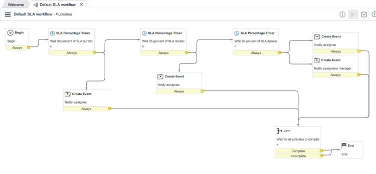
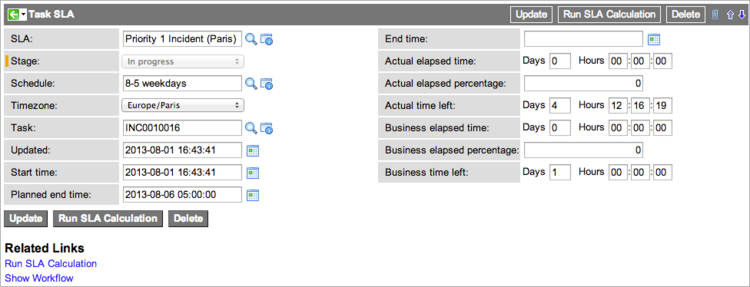

Defining an SLA
| |
Note: This article applies to Fuji. For more current information, see Service Level Management at http://docs.servicenow.com
The ServiceNow Wiki is no longer being updated. Please refer to http://docs.servicenow.com for the latest product documentation. |
Contents
- 1 Overview
- 2 Defining an SLA
- 3 Example
- 4 SLA Troubleshooting
1 Overview
Service Level Agreements (SLAs) allow the service desk to track whether or not their representatives are providing a certain level of service. The most common use of SLAs is to ensure that incidents are resolved within a certain amount of time.
A service offering SLA applies only to service offerings for business services. To define a service offering SLA, navigate to Business Services > Service Offering SLAs > SLAs. This functionality requires Service Portfolio Management and Service Portfolio Management - SLA Commitments.
An SLA can be tied to a contract and service performance for a vendor, and credit can be automatically applied in the event of a breach. For more information, see Vendor Performance and Vendor Credit.
1.1 OLAs and Underpinning Contracts
The task SLA engine provided with service level agreements can also be used to define operational level agreements (OLAs) or underpinning contracts in exactly the same way as SLAs. The only difference between SLAs, OLAs, and underpinning contracts is the Type field on the Task SLA form. Changing the type field does not change the behavior of the task SLA.
For an example of an OLA, see Defining an OLA for Catalog Fulfillment.
2 Defining an SLA
When defining an SLA, the interaction of the Duration and Schedule fields is critical. For example, if you select a duration of 5 days and 2 hours and a 9-5 schedule, the 5 days and 2 hours are considered 122 hours (5 x 24 + 2). The 122 hours are distributed across the 9-5 schedule at 8 hours per day resulting in 15.25 schedule days (122/8 = 15.25).
To define an SLA:
- Navigate to Service Level Management > SLA > SLA Definitions.
- Click New.
- Fill in the form, as appropriate (see table).
| Field | Description | ||
|---|---|---|---|
| Name | An identifying name for the SLA. | ||
| Type | The type of agreement being defined. This is used for informational purposes and does not affect the behavior of the SLA. Choices are:
| ||
| Table | The table whose records will be tracked by this SLA. This must be a table that extends the Task table.
| ||
| Workflow | The SLA workflow that determines what activities occur in response to the SLA. For more information, see Creating an SLA Workflow. | ||
| Retroactive start | Enables an administrator to set a different triggering event for an SLA that is attached to a task after the task was created. If you select the Retroactive start check box, the Set start to field appears, offering options for starting the SLA from various events on the table selected. For example, if an incident's priority is changed to 1 - Critical and a Priority 1 SLA is attached at that time, Retroactive start means that the SLA counts from when the incident was first created, rather than from when the incident's priority changed. If Retroactive start is cleared, the SLA starts on the date and time that it was attached to the incident. | ||
| Duration type | Method for calculating the duration of the SLA. This can be a User specified duration, or a relative duration, such as End of next business day. | ||
| Duration | [Required] The length of time the SLA runs before it is marked Breached. This field appears only when the Duration type selected is User specified duration.
Note: The number of days specified in this field is converted to 24-hour blocks. If the Schedule field identifies a schedule with eight-hour days, a duration of 1 Day sets the SLA to breach three business days later. | ||
| Schedule | The hours during which the SLA timer runs. The schedule can be taken from SLA definitions or from CIs as defined by on the SLA Properties page. For an example of defining an SLA schedule, see Defining a Schedule for an SLA. For general information on schedules, see Using Schedules. | ||
| Timezone | Time zone for the SLA if The SLA definition's time zone is selected for the Use the following time zone for SLA property in Service Level Management > SLA Properties. This value is not used if the property has a different setting. For more information, see Using Time Zones. | ||
| Relative duration works on | For relative durations, specify the record against which the relative duration should be calculated. Select to use either Task record (the default) or SLA record.
This field appears only when the Duration type selected is Relative duration. | ||
| Set start to | The event that triggers the start of this SLA. Options available are based on date and time fields in the selected table. This field is visible only when Retroactive start is selected. You can select vendor events to trigger your SLA, starting with the Dublin release.
If vendor ticketing is active, vendor-specific options are available in this field for SLAs on the Incident [incident] table (starting with the Dublin release. You can select Vendor open, for example, to start the SLA when the incident State changes to Awaiting vendor. For more information, see Using Vendor Ticketing. | ||
| Vendor | The vendor providing the service for this SLA. This field is installed with vendor ticketing, starting with the Dublin release. | ||
| Start condition | Conditions for starting the SLA, defined in the condition builder. If these conditions are met, the system attaches an SLA to a task on the Table and begins the timing. All conditions used to define an SLA are case sensitive. | ||
| Stop condition | Conditions for stopping the SLA, defined in the condition builder. If these conditions are met, the system stops the SLA timer. If these conditions are met before the end of the duration defined in the Duration type and Duration fields has elapsed, the SLA state is set to Achieved. If these conditions are no longer met, the SLA does not resume. However, if the Start conditions are met again, a new SLA is attached. | ||
| Pause condition | Conditions for pausing the SLA, defined in the condition builder. If these conditions are met, the system pauses the SLA timer. Once the conditions are no longer met, the SLA resumes. Pause conditions are not compatible with relative durations. | ||
| Related Lists | |||
| Service Commitments | List of all service commitments for this service offering. Click New to create a new service commitment. This related list is available starting with the Dublin release. | ||
| Fields that can be added by configuring the form | |||
| Condition class | String value of an SLA Condition Rules record to use instead of the global Condition Rules. If blank, the global rules are used. For more information, see Modifying SLA Condition Rules. | ||
| Reset conditions | Conditions for resetting the SLA, defined in the condition builder. If these conditions are met, the system completes the current SLA and starts a new one. | ||
3 Example
This example demonstrates how to create a service level agreement to ensure that critical incidents logged in Paris are handled within 1 business day. This example uses the demo data within the system.
3.1 Setting Up the SLA
To define the SLA:
- Navigate to Service Level Management > SLA Definitions.
- Click New.
- Select Contract SLA as the SLA type.
- This type does not require a service offering with service commitments. The system completes these fields automatically:
- Type: The type is SLA. Although the type does not change the behavior of the SLA, it does help distinguish between agreements with customers, vendors, and internal departments.
- Table: Incident [incident] is the default table.
- Workflow: The system selects the Default SLA Workflow. To learn how to create a custom workflow for SLAs, see Creating a Service Level Management Workflow.
- Duration type: The default type is User specified duration.
- Timezone: The system enters the local timezone.
- Enter Priority 1 Incident (Paris) as the Name of this SLA.
- Select a Duration of 1 day.
- In the Schedule field, select 8-5 weekdays.
- This runs the timer between the hours of 8 am and 5 pm on weekdays.
- Select Microsoft as the vendor for this contract.
- The Vendor field is added when vendor ticketing is active (starting with the Dublin release).
- Create these conditions:
- Start condition: [Location] [is] [Paris], [Priority] [is] [1 - Critical] AND [Active] [is] [True]. The SLA attaches to active Priority 1 incidents in Paris.
- Stop condition: [Active] [is] [False]. When a user closes or resolves the incident, the SLA stops tracking time.
- Pause condition: [State] [is one of] [Awaiting Problem, Awaiting User Info, Awaiting Evidence]. This avoids tracking time while the service desk is waiting for outside events.
- Click Submit.
- The completed form looks like this:
- Whenever an incident in Paris is listed as being priority 1, the system launches the following workflow. This workflow pauses if the incident is awaiting user information or evidence, and completes if the incident becomes inactive.
- 
3.2 Testing the Service Level Agreement
- Navigate to Incident > Create New.
- Complete the form, making sure to select the following values:
- Set the Impact and Urgency to 1 - High. These settings change the Priority to 1 - Critical.
- Select Paris as the Location.
- The other data in the form is not used in this test.
- Click Submit.
- Select the Task SLAs related list.
- Click the reference icon for the Priority 1 Incident (Paris) SLA to display information about this instance of the task SLA.
- 
- See Service Level Agreements for more details about the task SLA.
- Under Related Links, click Show Workflow to display the workflow for this SLA.
4 SLA Troubleshooting
4.1 Why is my SLA not attaching?
To investigate the reason for the SLA not attaching to a task, you must check for the following:
- Condition count widget
- Configuration of condition types in Service Level Management
- Default condition type (SLAConditionBase)
- Simple condition type (SLAConditionSimple)
4.1.1 Condition count widget
If your system is running on the Fuji release or later, you can add an attribute to the condition fields on the SLA Definition table to enable the Condition Count Widget. Enabling this feature will make it easier when troubleshooting.
4.1.2 Configuration of condition types in Service Level Management
Condition types are script includes that the SLA engine uses to determine whether to start, stop, pause, cancel or reset a Task SLA.
- To determine how condition types have been configured within Service level management:
- Note: These instructions only consider the two condition types provided by default. They do not consider customized or new condition types.
- Navigate to the list of SLA Definitions. Personalize the list and add the Condition type field. Go to Default (SLAConditionBase) or Simple (SLAConditionSimple) depending on the value in the field. For example, either SLAConditionBase or SLAConditionSimple. If the field is empty continue to step 2 below.
- Replace <your-instance-name> with your instance’s name in the following URL: http://<your-instance-name>.service-now.com/nav_to.do?uri=sys_properties.do?sys_id=956cb8b40a0a2c8941be2324e33ae3a9. Go to Default (SLAConditionBase) or Simple (SLAConditionSimple) depending on the property value. For example, either SLAConditionBase or SLAConditionSimple.
4.1.2.1 Default condition type (SLAConditionBase)
When using the Default condition type, Task SLA records only attach when the Start conditions match and the Stop conditions do not match.
- The following flow diagram demonstrates the process.
- Check the start conditions.
- If you have enabled the Condition Count widget attribute, click on the link for start conditions. If not, then open a list of incident records and replicate your start conditions.
- Add another condition to your filter that includes a task record (blue 3) that should have a Task SLA attached to it. This will confirm that your Start condition matches the correct task. The list should look similar to the screenshot below.
- If your filter does not bring up any records, it is likely that your Start condition is the reason SLAs are not attaching. To determine the conditions that are causing the problem:
- In your current list, remove all the conditions except for the one specifying your Task record. Remove conditions for blue 1 and 2 and retain 3.
- Add one of your filter conditions.
- Click Run.
- If your record is no longer in the list, take note of that condition and remove it.
- Repeat steps 1 to 3 until there are no conditions left to add. From the notes you have made of the conditions you removed, these are the ones that do not match your task.
- You must now change your Start conditions in order for it to match correctly.
- If your filter brings up a record, your Stop condition must be checked.
- In your current list, remove all the conditions except for the one specifying your Task record. Remove conditions for blue 1 and 2 and retain 3.
- Check the stop conditions.
- Repeat steps 1.1 and 1.2, this time using the Stop conditions.
- If your filter brings up the same record as in step 1, the problem is that your Start and your Stop conditions match at the same time and this is the reason the SLAs do not attach.
4.1.2.2 Simple condition type (SLAConditionSimple)
When using the Simple condition type, Task SLA records will only attach when the Start conditions match. If the Stop Conditions match when a Task SLA is being attached, the Task SLA will still be processed but it will be completed immediately. The following flow diagram demonstrates the process.
- Check the start conditions.
- If you have enabled the Condition Count widget attribute, click on the link for start conditions. If not, then open a list of incident records and replicate your start conditions.
- Add another condition to your filter that includes a task record (blue 3) that should have a Task SLA attached to it. This will confirm that your Start condition matches the correct task. The list should look similar to the screenshot below.
- If your filter does not bring up any records, it is likely that your Start condition is the reason SLAs are not attaching. To determine the conditions that are causing the problem:
- In your current list, remove all the conditions except for the one specifying your Task record. Remove conditions for blue 1 and 2 and retain 3.
- Add one of your filter conditions.
- Click Run.
- If your record is no longer in the list, take note of that condition and remove it.
- Repeat steps 1 to 3 until there are no conditions left to add. From the notes you have made of the conditions you removed, these are the ones that do not match your task.
- You must now change your Start conditions in order for it to match correctly.
- In your current list, remove all the conditions except for the one specifying your Task record. Remove conditions for blue 1 and 2 and retain 3.
4.2 Why do I have cancelled and in progress SLAs for the same definition on my task?
To investigate the reason for cancelled and in progress SLAs for the same definition on a task, you must check for the following:
- Configuration of condition types in Service Level Management
- How the Default and Simple condition types attach and cancel task SLAs
- Analyze the history of the task
4.2.1 Configuration of condition types in Service Level Management
Condition types are script includes that the SLA engine uses to determine whether to start, stop, pause, cancel or reset a Task SLA.
- To determine how condition types have been configured within Service level management:
- Note: These instructions only consider the two condition types provided by default. They do not consider customized or new condition types.
- Navigate to the list of SLA Definitions. Personalize the list and add the Condition type field. Go to Default (SLAConditionBase) or Simple (SLAConditionSimple) depending on the value in the field. For example, either SLAConditionBase or SLAConditionSimple. If the field is empty continue to step 2 below.
- Replace <your-instance-name> with your instance’s name in the following URL: http:// <your-instance-name>.service-now.com/nav_to.do?uri=sys_properties.do?sys_id=956cb8b40a0a2c8941be2324e33ae3a9. Go to Default (SLAConditionBase) or Simple (SLAConditionSimple) depending on the property value. For example, either SLAConditionBase or SLAConditionSimple.
4.2.2 How the Default and Simple condition types attach and cancel task SLAs
4.2.2.1 Default condition type (SLAConditionBase)
When using the Default condition type:
- Task SLA records only attach when the Start conditions match and the Stop conditions do not match.
- Task SLA records cancel when a task is updated so that the Start condition no longer matches and the Stop conditions do not match.
- The following flow diagram demonstrates how a series of updates to a task can result in both a cancelled and an in progress Task SLA record being attached to a task.
4.2.2.2 Simple condition type (SLAConditionSimple)
When using the Simple condition type:
- Task SLA records will only attach when the Start conditions match. If the Stop Conditions match when a Task SLA is being attached, the Task SLA will still be processed but it will be completed.
- Task SLA records will cancel when the task is updated so that the start condition no longer matches and the pause condition does not match.
- The following flow diagram demonstrates how a series of updates to a task can result in both a cancelled and an in progress Task SLA record being attached to a task.
4.2.3 Analyze the history of the task
To determine which updates to the task caused the task SLAs to be attached or cancelled, you can use the audit history filtered to only show the field changes that are part of the conditions on the SLA Definition. This process of analyzing the history can be used to determine why the Task SLAs linked to a task are in a particular state. For example, consider the start and stop conditions in the screenshot below:
The audit history of the Active, Priority, and Incident state fields will enable you to determine when this SLA would attach or cancel. To view the history of a task:
- Navigate to the Action menu on the form and choose History > List.
- A list containing details of the updates to all fields on the task is displayed. You can filter by Field as demonstrated in the screenshot below.
- The list of field changes enable you to determine when the SLA would have attached or cancelled.

{kind=link}
{kind=link}
{kind=link}
{kind=link}
{kind=link}
{kind=link}
{kind=link}
{kind=link}
{kind=link}
{kind=link}
{kind=link}
{kind=link}
{kind=link}
{kind=link}
{kind=link}
| Update number | Matching SLA conditions | SLA action |
|---|---|---|
| 0 | Start condition matches
Stop condition does not match |
New Task SLA created and attached |
| 1 | Start condition does not match
Stop condition does not match |
Existing Task SLA cancelled |
| 2 | Start condition matches
Stop condition does not match |
New Task SLA created and attached |
4.3 Why is my SLA canceling?
To investigate the reason for the SLA canceling, you must check for the following:
- Condition count widget
- Configuration of condition types in Service Level Management
- Default condition type (SLAConditionBase)
- Simple condition type (SLAConditionSimple)
4.3.1 Condition count widget
If your system is running on the Fuji release or later, you can add an attribute to the condition fields on the SLA Definition table to enable the Condition Count Widget. Enabling this feature will make it easier when troubleshooting.
4.3.2 Configuration of condition types in Service Level Management
Condition types are script includes that the SLA engine uses to determine whether to start, stop, pause, cancel or reset a Task SLA.
- To determine how condition types have been configured within Service level management:
- Note: These instructions only consider the two condition types provided by default. They do not consider customized or new condition types.
- Navigate to the list of SLA Definitions. Personalize the list and add the Condition type field. Go to Default (SLAConditionBase) or Simple (SLAConditionSimple) depending on the value in the field. For example, either SLAConditionBase or SLAConditionSimple. If the field is empty continue to step 2 below.
- Replace <your-instance-name> with your instance’s name in the following URL: http:// <your-instance-name>.service-now.com/nav_to.do?uri=sys_properties.do?sys_id=956cb8b40a0a2c8941be2324e33ae3a9. Go to Default (SLAConditionBase) or Simple (SLAConditionSimple) depending on the property value. For example, either SLAConditionBase or SLAConditionSimple.
4.3.2.1 Default condition type (SLAConditionBase)
When using the Default condition type, task SLA records cancel when the Stop, Reset, and Start conditions do not match.
- The following flow diagram demonstrates the process.
{kind=link}
- Check the start conditions.
- If you have enabled the Condition Count widget attribute, click on the link for start conditions. If not, then open a list of incident records and replicate your start conditions.
- Add another condition to your filter that includes a task record (blue 3) that should have a running Task SLA attached to it. The list should look similar to the screenshot below.
- If your filter does not bring up any records, your Start condition is the reason SLAs are canceling. To determine the conditions that are causing the problem:
- In your current list, remove all the conditions except for the one specifying your Task record. Remove conditions for blue 1 and 2 and retain 3.
- Add one of your filter conditions.
- Click Run.
- If your record is no longer in the list, take note of that condition and remove it.
- Repeat steps 1 to 3 until there are no conditions left to add. From the notes you have made of the conditions you removed, these are the ones that do not match your task.
- You must now change your Start conditions in order for it to match correctly.
- In your current list, remove all the conditions except for the one specifying your Task record. Remove conditions for blue 1 and 2 and retain 3.
{kind=link}
4.3.2.2 Simple condition type (SLAConditionSimple)
When using the Simple condition type, Task SLA records cancel when the Stop, Reset, Pause and Start conditions do not match. The following flow diagram demonstrates the process.
{kind=link}
- Check the start conditions.
- If you have enabled the Condition Count widget attribute, click on the link for start conditions. If not, then open a list of incident records and replicate your start conditions.
- Add another condition to your filter that includes a task record (blue 3) that should have a Task SLA attached to it. This will confirm that your Start condition matches the correct task.
- If your filter does not bring up any records, your Start condition is the reason SLAs are canceling.
- To determine the conditions that are causing the problem:
- In your current list, remove all the conditions except for the one specifying your Task record. Remove conditions for blue 1 and 2 and retain 3.
- Add one of your filter conditions.
- Click Run.
- If your record is no longer in the list, take note of that condition and remove it.
- Repeat steps 1 to 3 until there are no conditions left to add. From the notes you have made of the conditions you removed, these are the ones that do not match your task.
- You must now change your Start conditions in order for it to match correctly.
{kind=link}
4.4 When are SLAs calculated?
To determine when SLAs are calculated, check the status of the following:
- Scheduled jobs
- Task updates
- Task on-display
4.4.1 Scheduled jobs
There are six scheduled jobs that calculate Task SLAs based on how close the SLA is to breaching (reaching its Planned end time).
- SLA update (already breached): refreshes the timings in task SLA records that have already breached. This is limited to task SLAs where the breach time is within the last 365 days. This job runs once a day.
- SLA update (breach after 30 days): refreshes the timings in task SLA records where the breach time is more than 30 days away. This is limited to task SLA records where the breach time is within the next 365 days. This job runs every 5 days.
- SLA update (breach within 30 days): refreshes the timings in task SLA records where the breach time is more than 1 day away and less than 30 days away. This job runs once a day.
- SLA update (breach within 1 day): refreshes the timings in task SLA records where the breach time is more than 1 hour away and less than 24 hours away. This job runs every hour.
- SLA update (breach within 1 hour): refreshes the timings in task SLA records where the breach time is more than 10 minutes away and less than 1 hours away. This job runs every 10 minutes.
- SLA update (breach within 10 min): refreshes the timings in task SLA records where the breach time is in the next 10 minutes. This job runs every minute.
The scheduled jobs calculate all active Task SLA records that are not paused and have a Planned end time that falls into the given breach timeframe
4.4.2 Task updates
Whenever a task such as an incident is updated, the SLA engine processes each of the task SLA records that are linked to it. This may include a task SLA that has recently attached to the task.
If the updates to the task results in a stage change on a task SLA, the latest timings will be calculated. For example, if the stage changes from In Progress to Paused, then the latest timings are calculated.
4.4.3 Task on-display
The system property glide.sla.calculate_on_display enables task SLA records to calculate when the task form is displayed for all active Task SLA records that are not paused. This ensures current Task SLA timings are up to date.
- Note: The time taken to load the form increases if the calculate on display property is enabled.
4.5 How are actual and business values calculated?
Actual and business values are calculated using the following:
- SLA engine properties that influence business values
- SLA Definitions
- Task SLAs
4.5.1 SLA engine properties that influence business values
The following two SLA properties determine the selection of the schedule and timezone during the creation of Task SLA, thereby influencing the calculation of business fields on a Task SLA.
- Use the following schedule (calendar) for SLA (com.snc.sla.schedule.source)
- This property determines where the schedule is derived from during the creation of an SLA.
- Note: The default value for this property is The SLA definition’s schedule.
- See: Defining a Schedule for an SLA
- Use the following time zone for SLA (com.snc.sla.timezone.source)
- This property determines where the time zone is derived from during the creation of an SLA.
- Note: The default value for this property is The caller’s time zone. This is the time zone of the user selected in the Caller/Opened by field on the Task that the Task SLA record is related to.
- See: Time Zones in Service Level Agreements
4.5.2 SLA Definitions
A task SLA picks its schedule, by default, from the one specified on the SLA Definition. However, this can be overridden by the Use the following schedule (calendar) for SLA (com.snc.sla.schedule.source) system property
The schedule, which is effectively the working hours, specified on the SLA Definition is typically used during calculation of the values for the business fields on the Task SLAs for that particular definition.
The graphic below demonstrates the effect schedule has on the the calculation of business values.
{kind=link}
For more information on defining Schedules please see the following topics in the ServiceNow wiki:
4.5.3 Task SLAs
When each Task SLA record is created, the SLA engine will determine the appropriate values for the Schedule and Timezone fields based on the choices selected in the two system properties (explained above) respectively and then values taken from a combination of the SLA definition and the Task that the definition has matched with. These properties may then refer to the values in the task that the SLA is attached to. For example, caller’s timezone.
The Schedule and Timezone values in a specific Task SLA record are the ones used to calculate the values in the business fields.
The actual fields always contain the 24 x 7 timings.
The business fields always contain the timings based on the Schedule. If you have appropriate user access, you can click the Schedule record from the Task SLA and then use the Show Schedule link to see a calendar representation of the same. In addition:
- The business fields are not calculated and remain at 0 if the Task SLA record does not have a schedule.
- The timezone is applied to the timing calculations that are performed against the Schedule
- Note: If there is a timezone specified on the Schedule record itself, then this must also be taken into account. For example a Task SLA that is active between 08:00-17:00 in the Europe/London timezone would only cross over for 1 hour with an 8-5 Schedule that is in the US/Pacific timezone.
- If the timezone is empty, the system timezone is used.
4.5.4 Example calculations
- A SLA definition is set up to have a duration of 24 hours with no schedule. An incident is created and the aforementioned SLA is attached to this incident. The incident was created at 11:32 on a Monday morning and was resolved on Tuesday morning at 9:15 am. In this case,
- There is no schedule and hence the business elapsed time is 0.
- The actual elapsed time is 21h 17min.
- A SLA definition is set up to have a duration of 24 hours with an 8-5 Weekday schedule. An incident is created and the aforementioned SLA is attached to this incident. The incident was created at 11:32 on a Monday morning and was resolved on Tuesday morning at 9:15 am. In this case,
- The actual elapsed time is still 21h 17min.
- The business elapsed time is not zero in this case since there is a schedule.
- Based on the schedule, the business elapsed time is calculated as follows:
- From 11:32 to 17:00 (end of schedule time) on Monday = 4 hours 28 minutes
- From 08:00 (start of schedule time) to 09:15 (close of incident) = 1 hour 15 minutes
- Total business elapsed time: 5 hours 43 minutes
4.6 Why are my business values not calculating correctly?
To investigate the reason for business values not calculating correctly, you must check for the following::
- Schedule attached to the SLA
- Schedule entries associated with the attached schedule
4.6.1 Schedule attached to the SLA
View the schedules attached to the SLA in calendar view to determine the invalid schedule. Note: Child schedules are not displayed in the calendar To view the schedule attached to the SLA in calendar view:
- Open the specific SLA and verify that there is a valid schedule associated with that SLA.
- Open the associated schedule and select Show Schedule from the Related Links section.
- The calendar view displays all the schedule entries that are associated with the schedule.
- The calendar view displays when the entries are scheduled for and when the entries have ended. In this case, the schedule entry Tuesday – Thursday ends on day 14 of the month and there are no entries from day 19 to 21. Hence, the Tuesday – Thursday schedule entry must be investigated further to validate the values.
{kind=link}
4.6.2 Schedule entries associated with the attached schedule
View the details of the schedule entries of the schedule attached to the SLA to check for the repeat until date. This date is used to state how long the schedule entry is valid for. However, the schedule entry becomes invalid when the repeat until date is past the current date. This causes the SLA to not consider the schedule and the business values to calculate incorrectly.
To view the details of the schedule entry:
- Open the schedule entry from the schedule form.
- Check the Repeat until field.
- If the date entered in the Repeat until field is in the past, then the current schedule entry is invalid to be used for calculations.
- In this case, the Tuesday – Thursday schedule entry has a repeat until date of January 28, 2016. Therefore, the calendar view only displays the schedule entries until the last valid Thursday on day 14 of the month and no later.
{kind=link}